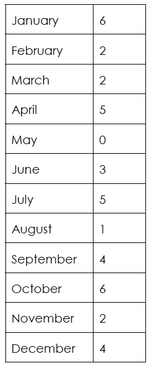
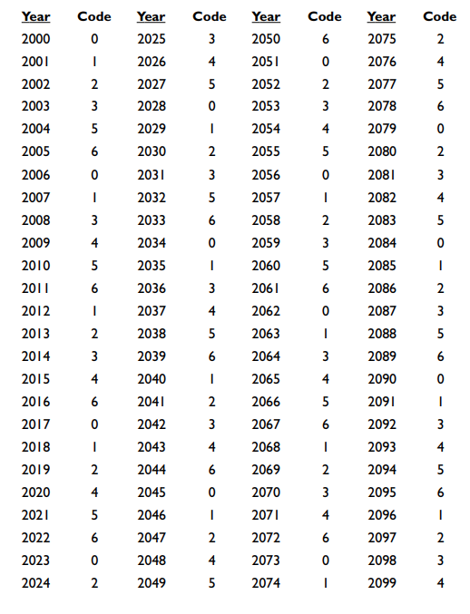
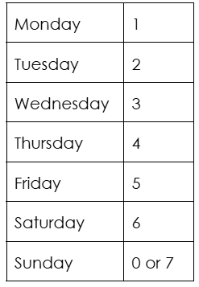

Day of the Week
Given any date, you can figure out the day of the week on that specific day with the following steps.
General Solution
Follow these instructions:
- Remember or note down these two codes:
 
Beware! (Left Chart) For leap years, the code for January will become 5 and the one for February will be 1. -
However, the good news is that we do not have to remember all these codes. The trick is to know what years have 0 codes, for example, 2006. Then, for every year after 2006, your code increases by 1 - 2007 has a 0 + 1 = 1 code. However, if you come across a leap year, such as 2008, you have to add two. Therefore, 2008 has a 1 + 2 = 3 code (2007 code + 2). This cycle continues on, until you reach 6 or 5. If the next year is not a leap year, a six code from the previous year would become a 0 code, while a 5 code would become a 0 code if it was a leap year. Essentially, 7 codes are instead 0 codes.
Trick
Years from 2000 to 2009 (Let the year be 2000 + x):
Year code = x/4 (discard the remainder) + x
Finally, subtract the largest multiple of 7 from your current year code.
Example
For the year 2065, we have x as 65. x/4 = 65/4 = 16 R 1 (We forget the 1, or the remainder)
Year code = 16 + 65 = 81
Largest multiple: 77
Therefore, the year code for 2065 is 81-77 = 4 - Add the date (1-31), month codes, and year codes together, then subtract the largest multiple of 7 from this
sum.
Eg. March 19, 2061
19 + 2 + 6 = 27
27-21 = 6, or Saturday.
January 1
- Remember this code:
 - Take the last two digits of the year and multiply it by 25%, or ¼. Next, discard the change, and add the
original amount.
Example
In year 2067, we take these steps:
67 * 25% = 67 * ¼ = 16.75
Discarding the change, we have 16. Adding the original amount, 67, we have:
67+16 = 83
We subtract the largest multiple of 7, 77 from 83 to calculate:
83-77 = 6, or Saturday!